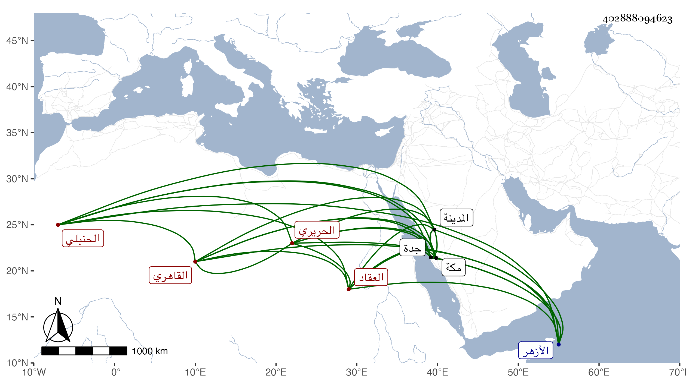

0902Sakhawi.DawLamic.ITO20230111-ara1.EIS1600.402888094623
Biography ID: 402888094623
243
عبد الرحمن بن عبد الغني بن محمد بن عبد الرحمن القاهري الحريري العقاد والده الحنبلي ويعرف بابن العقاد . ولد في ذي الحجة سنة أربع وخمسين وثمانمائة بالخراطين قريبا من الأزهر ونشأ فحفظ القرآن وعمدة الأحكام وأربعي النووي وألفية الحديث والنحو والمحرر وجمع الجوامع والتلخيص وقواعد ابن هشام وألفية النحو وعرض على خلق كابن الديري والمناوي والولوي السنباطي والعز الكناني والعبادي والأمين الاقصرائي والشمني والشرواني والتقي الحصني وكاتبه في آخرين ، قرأ القرآن وتلا للسبع افرادا وجمعا على الشمس بن الخدر الحنبلي ثم على الزين جعفر ثم على ابن اسد افرادا وكذا جمعا لكن إلى آخر سورة الانبياء ، وكان معه حين توفي بالحديدة ، وعلى الزين عبد الغني الهيثمي بل أكمل عليه العشر وأخذ في النحو عن الشمس الابناسي نزيل الاستادارية والنور السنهوري وقرأ في الاصول والبيان على الحصنيين والعلاء وفي الفقه عند المحب بن جناق وأخذ قليلا عن العز الحنبلي ثم لازم البدر السعدي بل أخذ عن إمام الكاملية في الأصول وقرأ عليه شرحه للورقات وكذا شرح ابن الفركاح وسمع الحديث بقراءتي وقراءة غيري مع الولد وغيره على السيد النسابة والبارنباري وابن أبي الحسن وخلق كأم الشيخ سيف الدين وهاجر مما أثبته وغيري له وتميز وفهم وتكسب بالشهادة وراج أمره فيها لحذقه وسرعة كتابته وإنهائه الأمور خصوصا مع اقبال القاضي عليه وصار لذلك كله محسودا ممن هو أنحس وأسوأ حالا بحيث وصل أمره إلى السلطان ووصف بكونه نقيب الحنبلي فحينئذ بادر البدر للاستقرار بالتقي بن القزازي في النقابة وتبرم من كونه نقيبا واستراح من كلام كثير برئ منه ، وبالجملة فليس فيه من الأرصاف الظاهرة سوى سرعة حركته المؤدية إلى شبيه بالخفة وقد اختفى مدة بسبب مجاورته لمحمد بن اسماعيل برددار الأتابك وعشرته له ولولا اللطف لكان ما لا خير فيه ، وحج في سنة اثنتين وسبعين طلع في البحر مع شاهين الجمالي وقد استقر نائب جدة فدام بها بقية السنة ثم مع يشبك الجمالي حين كان أمير الأول ثم المحمل ثم في سنة ثمان وتسعين رفيقا للسيد عتقا براويد بالمدينة النبوية ووصلها في حادي عشري رجب فزار ورجع اليوم الثالث بعد الجمعة وكانت أم ولده بمكة فحجا ثم عادا مع الركب .
